El Gobierno de Bagdad exige el levantamiento total del embargo.

Irak rechazó ayer una iniciativa del Consejo de Seguridad de la ONU que atenúa el papel de la comisión especial encargada del desarme , la Unscom , y le ofrece la oportunidad de aligerar las sanciones.
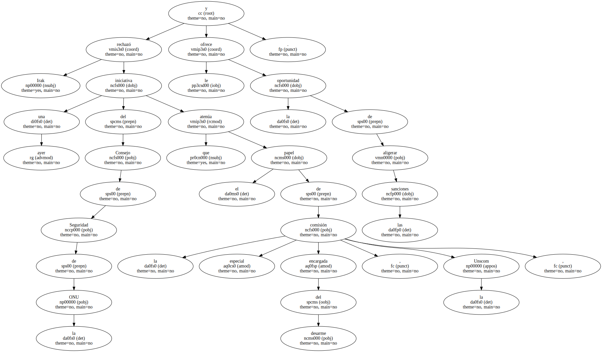El Gobierno iraquí consideró la propuesta de la ONU como una " maniobra dilatoria " y exigió un levantamiento total del embargo.
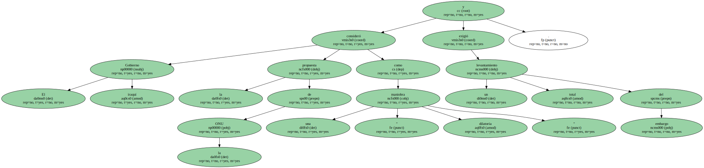La iniciativa del Consejo de Seguridad , aprobada el sábado , establece la puesta en marcha de tres comisiones - - desarme , situación humanitaria y presos de guerra kuwaitís - - para evaluar el estado de las relaciones entre Irak y la ONU.
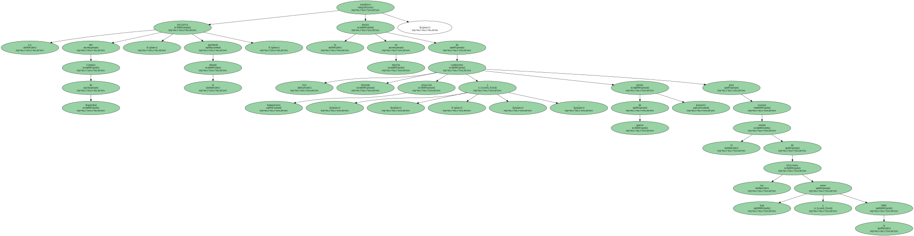Las comisiones deberán presentar sus conclusiones al Consejo de Seguridad antes del 15 de abril.
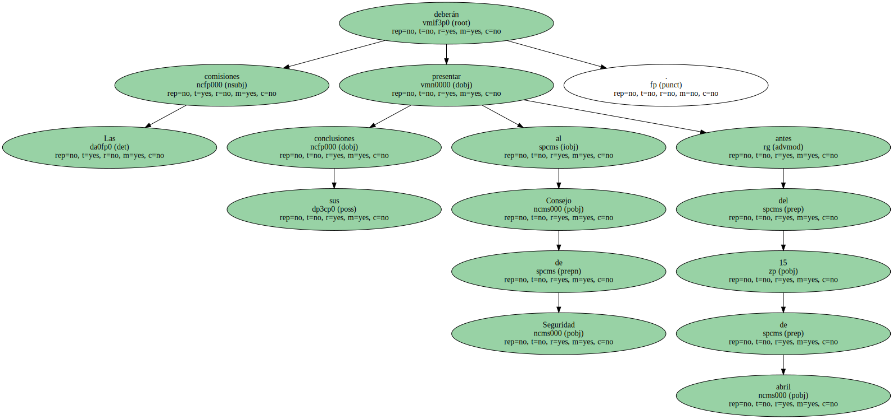Un paso positivo.
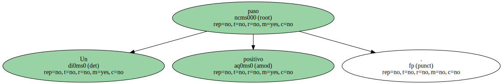Este paso es positivo para Irak , ya que diluye la influencia de la Unscom , denostada por Bagdad.
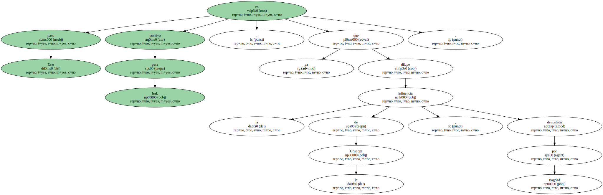El texto indica que la comisión sobre el desarme " recurrirá a la cooperación y la competencia de la comisión especial ( la Unscom ) de la Agencia Internacional de la Energía Atómica , del Secretariado de las Naciones Unidas y de cualquier otro órgano competente " , medida que pone en tela de juicio la preeminencia de la Unscom y limita sus potestades.
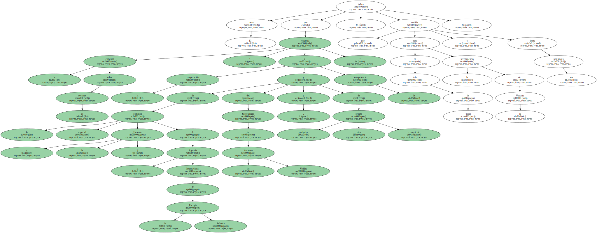Pese a ello , el presidente iraquí , Sadam Husein , que presidió una reunión del Gobierno , rechazó la iniciativa , porque significa " el mantenimiento del embargo ".
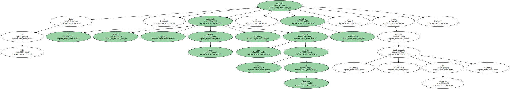Un comunicado oficial señaló que " Irak no ha sido consultado sobre la formación de estas tres comisiones " y , por tanto , " no se considera nada implicado en esta medida ".

En su lugar , el Gobierno reclama el " levantamiento inmediato e incondicional " del embargo vigente desde 1990.
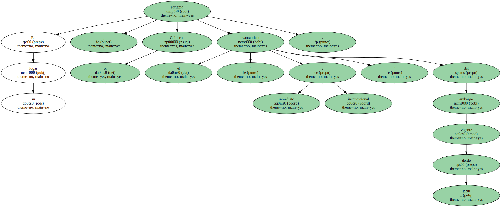La intransigencia de la postura iraquí coincide con los incidentes casi diarios que suceden en las zonas de exclusión aérea en el norte y en el sur del país.
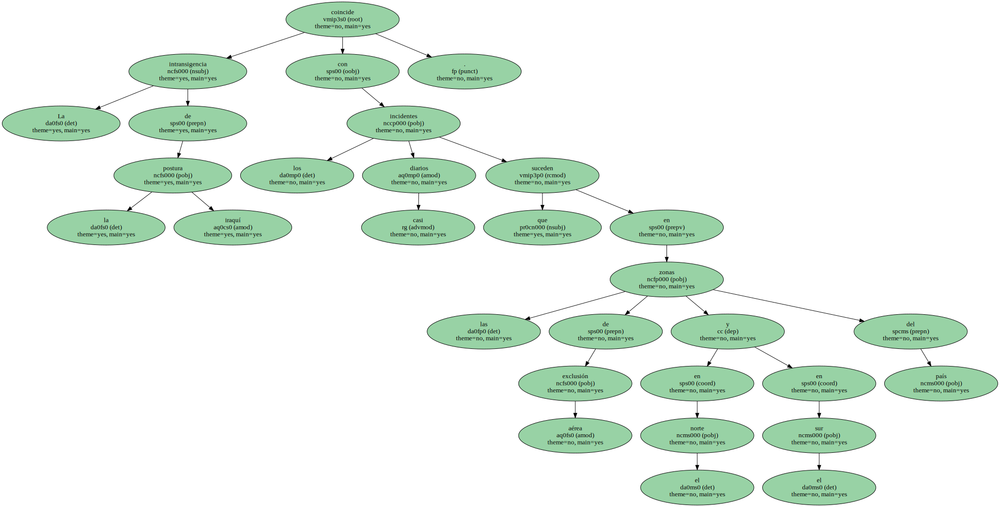Ayer , un caza F-16 estadounidense procedente de la base de Incirlik , en el sur de Turquía , disparó , " en legítima defensa " , un misil contra un radar iraquí , que constituía " una amenaza para los aparatos aliados " , según un comunicado de EEUU.
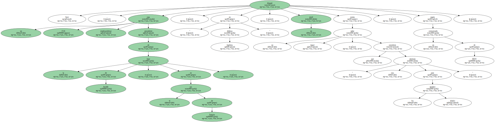El incidente tuvo lugar cerca de Mosul , en la zona de exclusión aérea situada en el norte del país , informa Reuters.
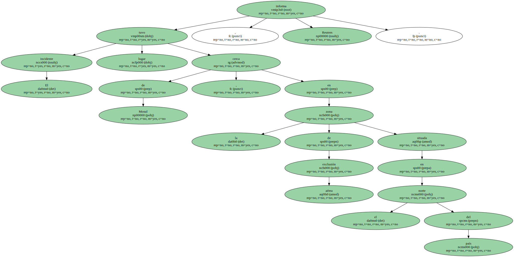Ataque a las comunicaciones.
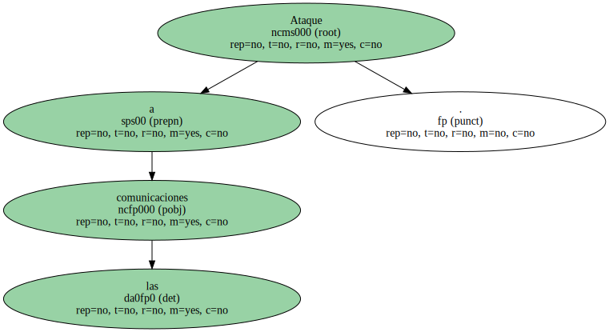Horas más tarde , ocho aviones estadounidenses y británicos que patrullaban la zona de exclusión en el sur de Irak " atacaron dos instalaciones de comunicaciones iraquís ".
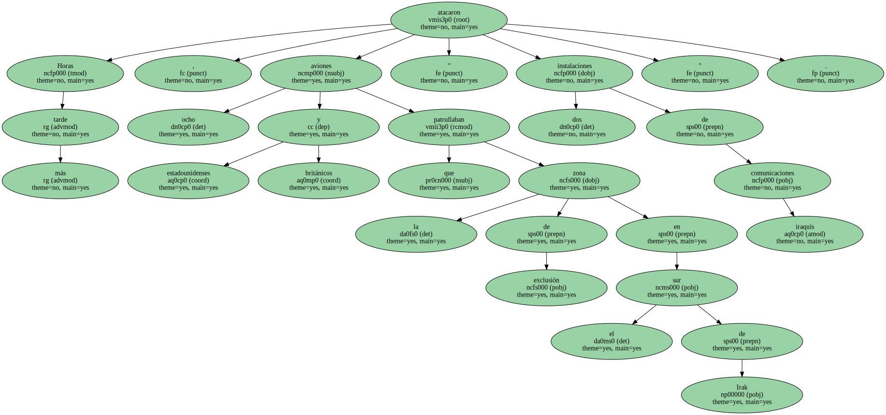El ataque se produjo , según el Pentágono , cuando " aviones de guerra iraquís ingresaron en el área ".
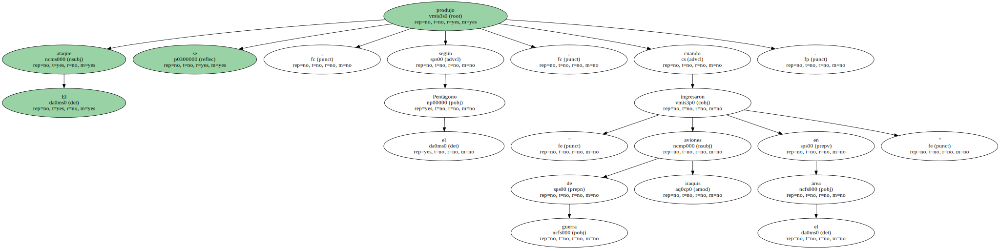El Sábado se produjeron seis incidentes entre cazas estadounidenses y la defensa antiaérea iraquí en esta misma zona de exclusión , que Bagdad considera ilegal.
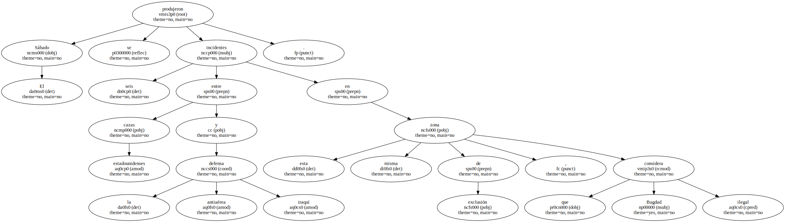Un portavoz militar iraquí precisó que la aviación aliada disparó o arrojó 17 misiles y bombas sobre emplazamientos defensivos iraquís.
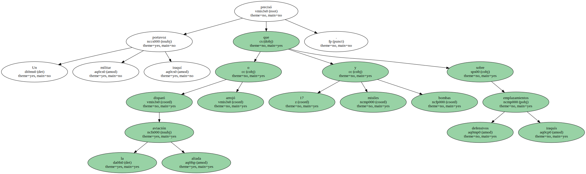Todos estos movimientos coinciden con la gira que realiza por la región del Golfo una delegación del Departamento de Estado norteamericano que tiene como objetivo aunar fuerzas para derrocar a Sadam Husein.
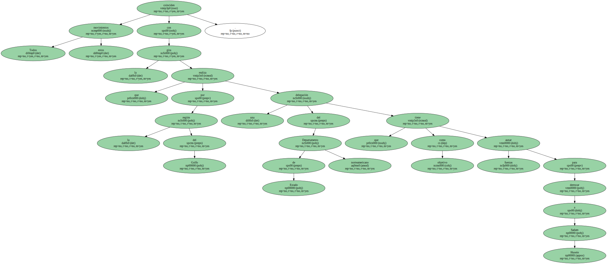La delegación está encabezada por el subsecretario de Estado para Oriente Próximo , Martin Indyk , que ayer se entrevistó en Kuwait con el emir Jaber al Ahmad al Sabah y el príncipe heredero Saad al Abdalá.
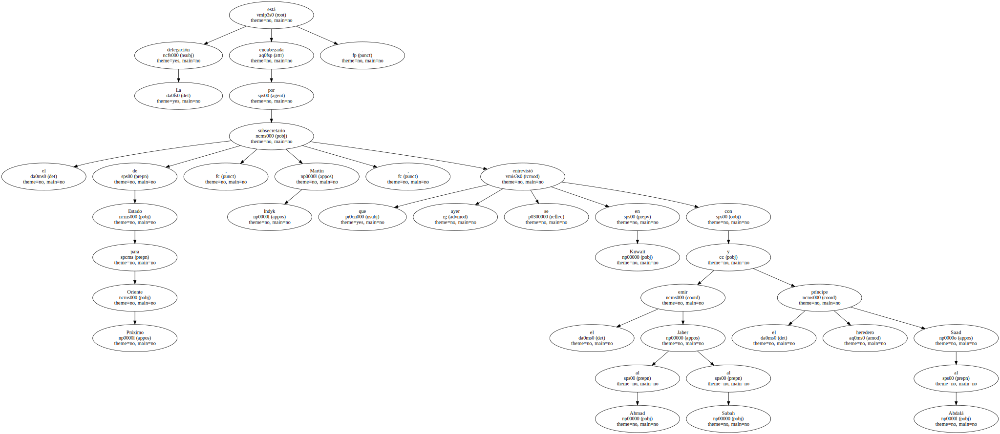